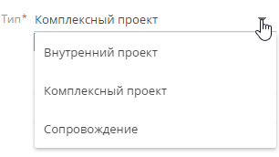

С помощью дизайнера страницы вы можете добавлять, изменять, скрывать или удалять поля на странице записи. Также вы можете управлять структурой данных раздела (т. е. списком колонок). При добавлении нового поля на страницу раздела и сохранении изменений новая колонка добавляется в структуру данных раздела.
При выборе колонки на панели элементов дизайнера страницы сначала просмотрите список колонок в блоке Существующая колонка. Возможно, нужная вам колонка уже есть в дизайнере и ее можно разместить на странице. Если среди существующих колонок нужной колонки нет, то используйте элементы из блока Новая колонка.
Добавить поле с использованием существующей колонки
В блоке Существующие колонки меню Элементы страницы представлены колонки, которые уже есть в разделе. Эти колонки не обязательно отображаются на странице записи, но они используются в базе данных Creatio и не подлежат удалению.
Некоторые колонки могут быть обязательными для заполнения на уровне объекта: вы не сможете создать запись в базе данных, не заполнив их. Обязательные колонки обозначены символом “звездочка” (*) (Рис. 1).
Для добавления существующих колонок на страницу:
-
Перейдите в нужный раздел, например, раздел Заявки.
-
Кликните Вид —> Открыть мастер раздела.
-
В блоке Страницы раздела мастера разделов:
-
Кликните Редактировать страницу, если в разделе настроена только одна страница.
-
Кликните по ссылке на соответствующую страницу, если в разделе настроено несколько страниц редактирования.
-
-
Перетащите существующие колонки из области Существующие колонки в необходимую область страницы.
Области, куда может быть помещено поле, подсвечиваются при перетягивании. Поля, уже добавленные на страницу, остаются доступными для повторного добавления, а их названия становятся бледно-серыми (Рис. 2).
Для изменения ширины колонки захватите мышью край соответствующего поля и задайте нужную ширину.
В текстовых полях, для которых настроен ввод многострочного текста, также можно изменить высоту (Рис. 3).
Для изменения свойств поля выделите его и нажмите  (Рис. 4).
(Рис. 4).
Для удаления поля со страницы выделите его и нажмите (Рис. 5).

Добавить поле с использованием новой колонки
В блоке Новая колонка на панели элементов страницы представлены все доступные типы колонок, которые можно добавить на страницу.
Вы можете добавить на страницу следующие типы колонок:
|
Тип колонки |
Тип поля на странице |
Пример |
|---|---|---|
|
Строка |
Текстовое поле (String). Может содержать буквы, цифры и любые другие символы. Многострочные текстовые поля предназначены для ввода больших объемов информации и могут быть разной высоты. Текстовые поля имеют несколько дополнительных параметров. Подробнее >>> |
Однострочные поля: ФИО и Полное название должности на странице контакта. |
|
Целое |
Числовое поле , которое может содержать только целые числа, без дробных чисел (Integer). |
Поле Возраст на странице контакта. |
|
Дробное число |
Числовое поле, которое может содержать дробные числа (Decimal). |
Поле Сумма оплаты на странице счета. |
|
Дата/Время |
Поля типа “Дата/Время” (Date/Time) содержат календарную информацию. |
Поля Начало и Завершение на странице активности. |
|
Справочник |
Поле справочника (Lookup) позволяет выбрать значения из заданного перечня вариантов, которые были внесены в справочник вручную или импортированы. Доступные для выбора значения хранятся в соответствующих справочниках. Вы можете заполнить справочное поле, выбрав значения из списка или всплывающего окна. Справочные поля имеют несколько дополнительных параметров. Подробнее >>> |
Поля с выбором значения из списка: поля Тип и Роль на странице контакта. Поля с выбором значения из всплывающего окна: поля Ответственный и Автор на странице активности. |
|
Логическое |
Логическое поле (Boolean) может содержать только одно из двух значений: “Да/Нет“. |
Поля Напоминать ответственному и Напоминать автору на странице активности (поля для установки признака). |
Чтобы добавить новое поле в раздел:
-
Перейдите в нужный раздел, например, раздел Заявки.
-
Кликните Вид —> Открыть мастер раздела.
-
В блоке “Страницы раздела” мастера разделов:
-
Кликните Редактировать страницу, если в разделе настроена только одна страница.
-
Кликните по ссылке на соответствующую страницу, если в разделе настроено несколько страниц редактирования.
-
-
Выберите колонку нужного типа в области Новая колонка и перетащите ее на страницу по аналогии с добавлением существующей колонки (Рис. 6).
После перетягивания новой колонки на странице появится новое поле соответствующего типа, а новая колонка будет добавлена в базу данных.
Рис. 6 — Добавление новой колонки на страницу записи - Укажите параметры новой колонки и поля, которое будет использоваться для ее заполнения (Рис. 7). Набор параметров в окне добавления новой колонки различается в зависимости от типа добавляемого поля.
Настроить поле типа “Строка”
При работе с колонками типа “Строка” вы можете использовать однострочные текстовые поля или многострочные текстовые поля.
Признак Многострочный текст есть только у полей типа “Строка”. Многострочные текстовые поля отличаются по высоте и предусмотрены для ввода больших объемов текста, который может содержать несколько абзацев. Примером такого поля является Результат подробно на странице активности. Если для поля установлен признак Многострочный текст, то вы можете изменить его высоту в дизайнере страницы, захватив край поля мышью и растянув его до нужного размера (Рис. 8).
Не устанавливайте признак Многострочный текст, если вам нужно добавить однострочное текстовое поле.
В поле Длина строки указывается, сколько символов может содержать поле страницы (Рис. 9). Вы можете установить следующие значения поля Длина строки: 50 символов, 250 символов, 500 символов или выбрать неограниченную длину поля.
Настроить поле типа “Дробное число”
При настройке колонки типа “Дробное число” страницы раздела вы можете задать точность значений, которые будут отображаться в поле (Рис. 10 ), от 1 до 8 десятичных знаков. Также для выбора доступны варианты “Целое число” и “Деньги”.
Настроить поле типа “Дата/Время”
При настройке колонки типа “Дата/Время” страницы раздела вы можете использовать поле Формат для выбора формата даты (Рис. 11). При заполнении поля Формат доступны следующие опции:
- “Дата” — в поле будет отображаться только дата в соответствующем формате.
- “Время” — в поле будет отображаться только время.
- “Дата/Время” — в поле будут отображаться и дата, и время.
Если вы меняете формат колонки типа “Дата/Время” для существующего раздела, то данные существующих записей данной колонки также будут обновлены. Если новый формат колонки менее точен, чем предыдущий, то данные существующих записей также станут менее точными. Например, если вы измените формат “Дата/Время” на “Дата”, то данные о времени не будут отображаться. В этом случае вы получите соответствующее уведомление.
Настроить поле типа “Справочник“
Справочное поле заполняется путем выбора значения из списка. Для справочного поля необходимо указать объект, который будет использоваться в качестве справочника, способ отображения данных при заполнении справочного поля и тип связи между записями в текущем объекте и объекте справочника.
Объект справочника
Список значений справочника основывается на записях объекта справочника. В зависимости от того, существует ли необходимый объект, выберите вариант Выбрать существующий справочник или Создать новый справочник.
При выборе существующего справочника в поле Справочник укажите объект, который будет источником справочных значений. Например, выберите объект “Контакт” в качестве справочника для поля Ответственный (Рис. 12).
Выберите Добавить новый справочник, чтобы в Creatio был создан новый объект. Потребуется указать заголовок и название для нового объекта справочника (Рис. 13):
-
В поле Заголовок укажите заголовок, по которому объект вашего справочника можно будет отличить от других объектов.
-
В поле Название укажите код для нового справочного объекта в базе данных. Название объекта должно содержать префикс. Префикс задается в системной настройке “Префикс названия объекта“ (код “SchemaNamePrefix“). По умолчанию в системной настройке установлено значение “Usr”.
Отображение справочника
Отображение справочника определяет, как будет заполняться справочное поле на странице.
-
Выберите способ отображения “Список”, чтобы значения справочника для заполнения справочного поля были представлены в виде выпадающего списка (Рис. 14). Этот способ подходит для случаев, когда предполагается небольшое количество справочных значений.
Рис. 14 — Пример выпадающего списка в справочном поле -
Выберите способ отображения “Всплывающее окно”, чтобы значения для заполнения справочного поля отображались в отдельном окне выбора (Рис. 15). Во всплывающем окне можно фильтровать, редактировать или удалять существующие значения справочника, а также добавлять новые. Такой способ отображения справочника оптимален, если вы используете в качестве источника справочных значений объект другого раздела (например, раздела Контакты).
-
Если необходимо, чтобы содержащиеся на детали записи не удалялись при удалении записи, с которой связана деталь, то выберите опцию Блокировать удаление, если есть связанные записи. В противном случае выберите Удалять записи с этим значением (Рис. 16).
Рис. 16 — Блокировка удаления записей
Добавить в поле подсказку
- Перейдите в нужный раздел, например, раздел Заявки.
- Кликните Вид —> Открыть мастер раздела.
- В блоке “Страницы раздела” мастера разделов:
- Кликните Редактировать страницу, если в разделе настроена только одна страница.
- Кликните по ссылке на соответствующую страницу, если в разделе настроено несколько страниц редактирования.
- Выберите на странице поле, для которого нужно добавить подсказку, и нажмите . Если такого поля еще нет, добавьте его.
- В окне настройки колонки в поле Подсказка введите текст, который должен отображаться пользователю (Рис. 17). В подсказках доступно html-форматирование. С его помощью вы можете добавить в подсказку выделение полужирным, список, гиперссылку и т. д. Для использования html-форматирования необходимо ввести текст подсказки вместе с html-разметкой.
Рис. 17 — Добавление подсказки в поле
-
Нажмите Сохранить.
В результате на странице записи в левом углу поля появится значок , по наведению курсора на который откроется подсказка (Рис. 18).
Рис. 18 — Отображение подсказки в поле